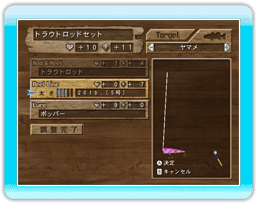

8
釣りを始める前に

「Challenge Mode」
「Free Mode」では、
釣りを始める前に、
まずタックル（釣り具）を
セッティングします。
●アピール値と耐久値
タックルにはアピール値と耐久値があり、それぞれの
数値が大きいほど、より有利に魚を釣ることができます。
・アピール値：魚が集まる目安の数値です。
数値が大きいほど魚にアピールできます。
・耐久値：魚の動きに耐えられる数値です。
数値が大きいほどラインが切れにくくなります。
●タックル選択
ーボタンでメニューを開き、タックル選択を選ぶと
「ルアー」と「ラインの太さ」を変更することができます。
タックル選択画面に入ると、現在使用しているタックルの
組み合わせが表示されます。
タックル選択は以下の手順で行ないます。
（１）対象魚を決める
＋ボタン、ーボタンで対象魚を切り替えます。
（２）ルアーを選択する
十字ボタンまたはコントロールスティックの上下で
カーソルを移動させ、ルアーを選択しＡボタンで決定します。
（３）レンジを選択する
レンジとは水深のことです。
レンジは５段階あり、各レンジに対応したルアーがあります。
・ トップウォーター：水面に浮くルアーです。
・ シャロー：水面より下の浅い場所に停滞するルアーです。
・ ミディアム：水面と水底の間の場所に停滞するルアーです。
・ ディープ：水底に近い場所に停滞するルアーです。
・ ボトム：水底に沈むルアーです。
十字ボタンまたはコントロールスティックの左右で
レンジを選択し、Ａボタンで決定します。
（４）ルアーを決める
選択したレンジの中からルアーを決めます。
アピール値の大きいものを選んでください。
十字ボタンまたはコントロールスティックの上下で
ルアーを選択し、Ａボタンで決定します。
（５）ラインの太さを決める
最後にラインの太さを変更して、アピール値と耐久値を
調整します。ラインを太くすれば耐久値が上がりますが
アピール値は下がります。逆にラインを細くすれば
アピール値が上がりますが耐久値は下がります。
十字ボタンまたはコントロールスティックの左右で
ラインの太さを変更できます。